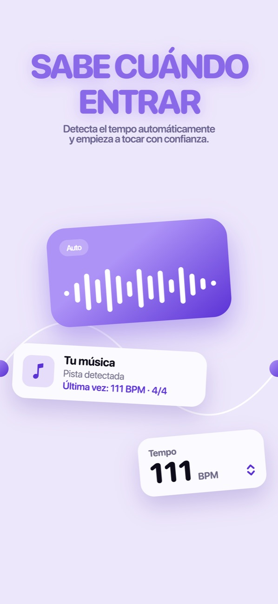
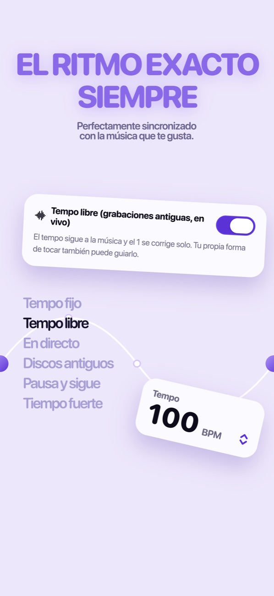
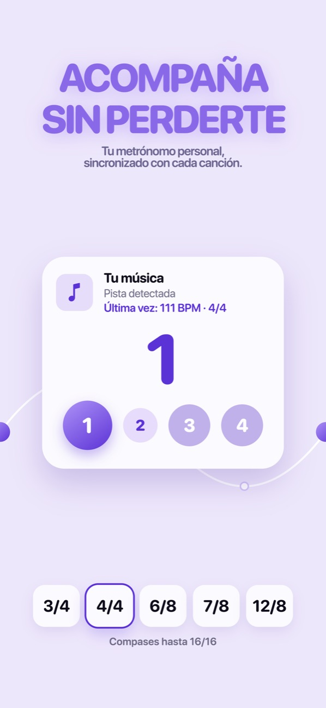
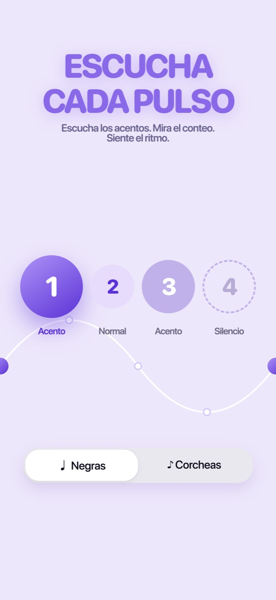

Cómo funciona
Pon música
Desde un altavoz, una banda u otra app.
Deja que escuche
En unos 6–10 segundos detecta tempo, compás y el primer tiempo. Las canciones que la app ya ha oído se reconocen en unos 5 segundos, incluso sin internet.
Toca con ella
El metrónomo marca el compás, con el primer tiempo más agudo y fuerte. También en corcheas si quieres.
Sigue la música mientras suena.
Tempo fijo
Una vez fijado, el tempo y el primer tiempo no se mueven. Tocar, cantar o dar palmas no desajusta el metrónomo.
Tempo libre
Para grabaciones antiguas o en directo cuyo tempo varía. El metrónomo acompaña a la música.
Reconocimiento sin conexión
Las canciones ya oídas empiezan la próxima vez con el compás correcto, aunque el tempo varíe.
Pausa y entrada
En pausa el metrónomo calla, pero sigue la música en silencio. Al entrar vuelve exactamente a tiempo.
Pensado para auriculares
Adelanto del clic contra el retardo de Bluetooth. Los clics pueden sonar por el altavoz del iPhone.
Manual
Un metrónomo normal con 30–300 BPM, compases hasta 16/16 y tap tempo. Funciona también sin micrófono.
Sabe cuándo entrar.
Primer tiempo acentuado, negras o corcheas. Cada tiempo puede acentuarse, sonar normal o silenciarse.




Sin cuenta. Sin anuncios. Sin rastreo.
Leer la política de privacidad- Micrófono
- El sonido se analiza en tu dispositivo. No se guardan ni se envían grabaciones.
- Reconocimiento de canciones
- Se envía una huella de audio (no audio) a Shazam (Apple).
- Datos de tempo
- Para una canción reconocida, se envían título y artista a GetSongBPM.
Soporte para AutoMetronom
Describe brevemente tu consulta. Respondemos lo antes posible y usamos tus datos solo para atender tu solicitud.
Para poder ayudarte: indica dispositivo, versión de iOS, versión de la app, la canción que sonaba y una breve descripción. Una captura suele ayudar.
Textos legales
Elige la región en la que usas AutoMetronom.
- SuizaPolítica de privacidadCondiciones de usoCopyright
- Unión Europea y EEEPolítica de privacidadCondiciones de usoCopyright
- Estados UnidosPolítica de privacidadCondiciones de usoCopyright
- China continentalPolítica de privacidadCondiciones de usoCopyright
- Otras regionesPolítica de privacidadCondiciones de usoCopyright